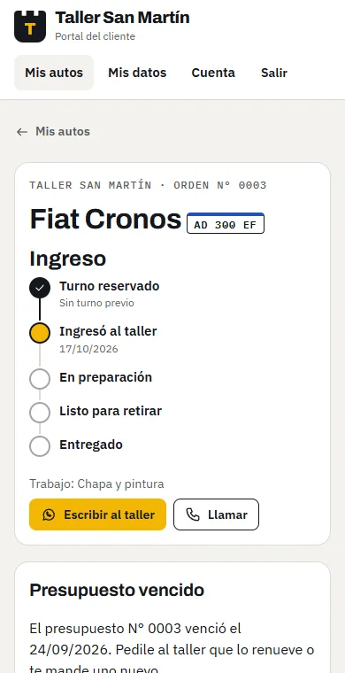
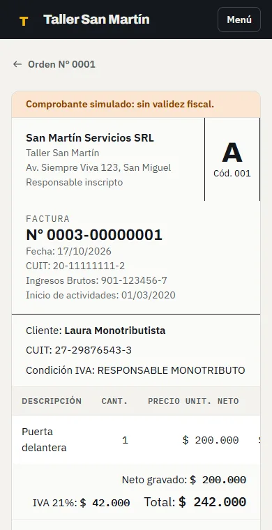

01 / 06 · Producto propio · Publicado
Botburg Taller
Gestión para talleres mecánicos: turnos, órdenes, presupuestos, factura electrónica y caja. Se vende como instalación única, y cada taller factura con su propio CUIT.
La decisión
En la caja nada se edita ni se borra: solo se anula, con motivo. Así el registro sirve de constancia. La recepción abre la caja y cobra; el administrador controla. Quien mueve la plata no es quien la audita.
- pruebas con PGlite, Postgres real y Playwright
- 193
- de lectura por comercio; escritura solo por funciones
- RLS
- factura electrónica por WSAA y WSFEv1
- ARCA
Supabase · PostgreSQL · Netlify Functions · JavaScript sin build · Playwright + axe

